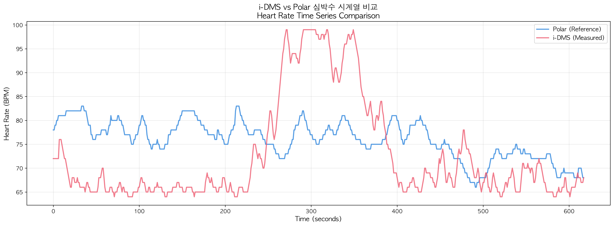
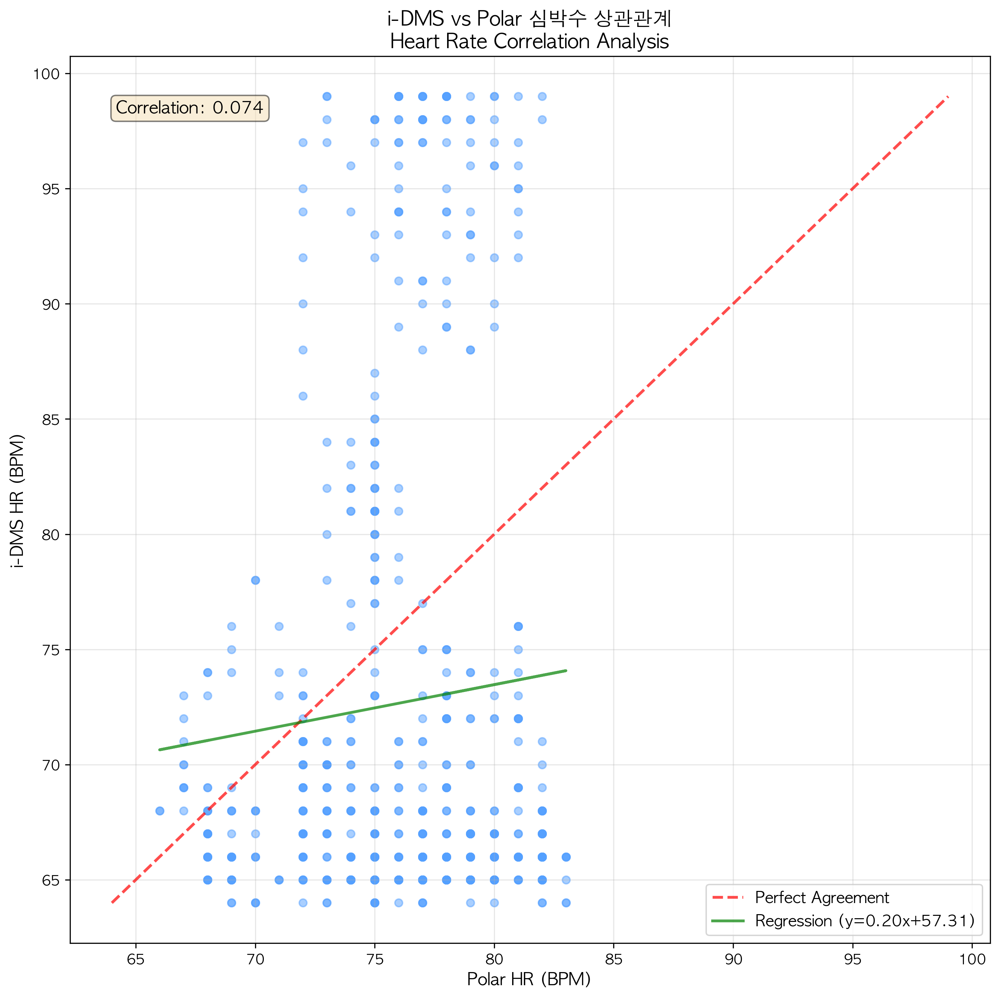
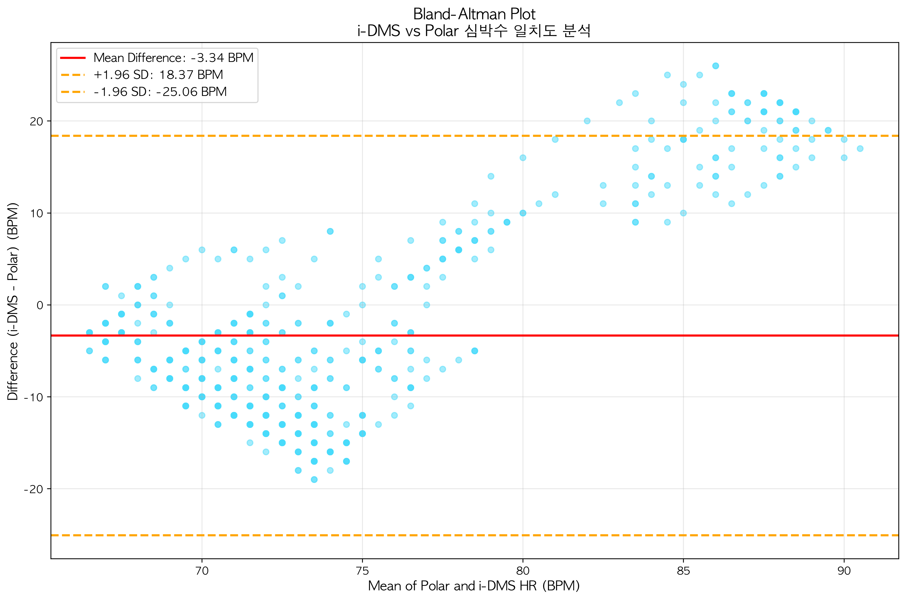
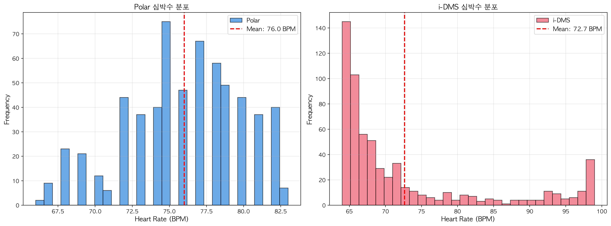
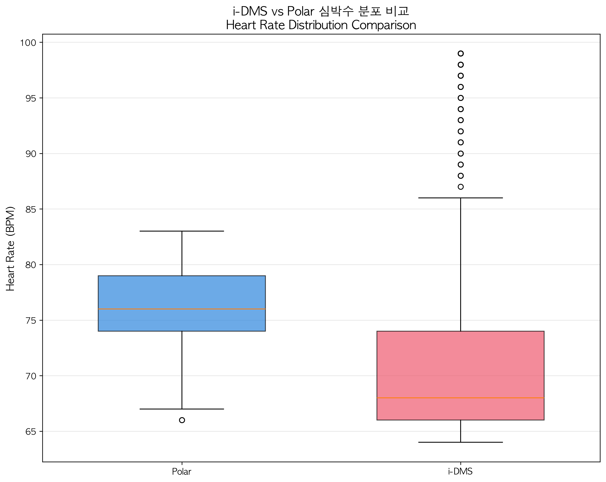
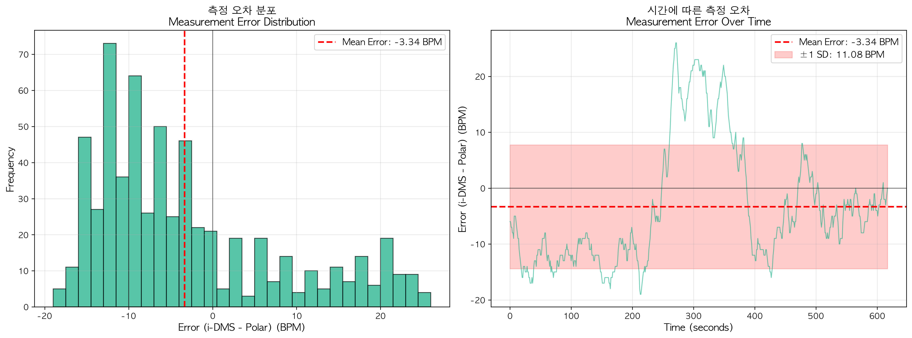
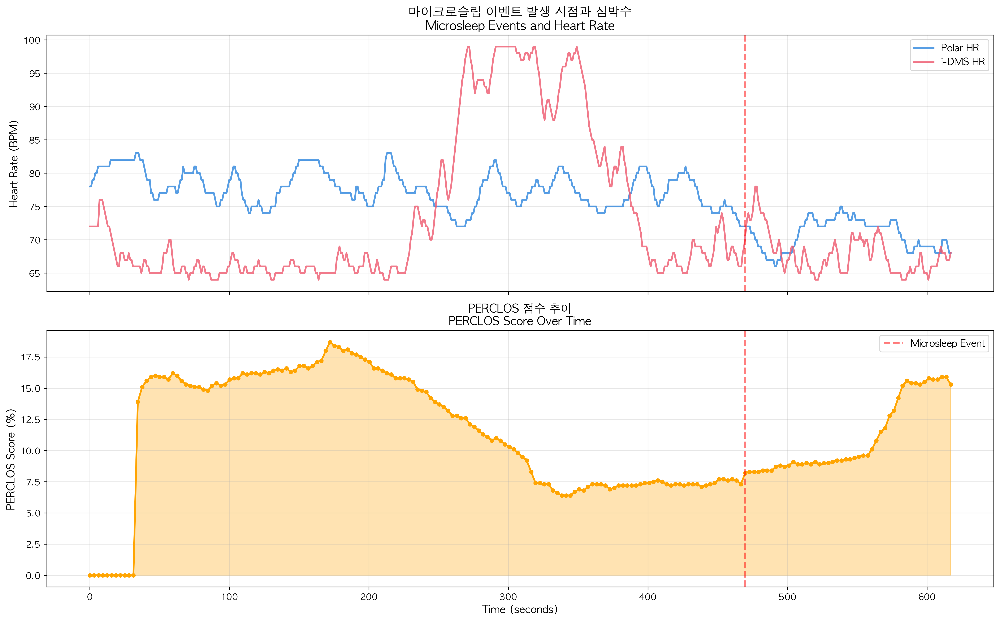

← Back to Main Page
📊 Overview
This report evaluates the biosignal detection accuracy of FunnyTech21's i-DMS (Driver Monitoring System) by comparing non-contact heart rate measurements with the Polar contact heart rate monitor band (reference value).
📈 Heart Rate Time Series Comparison

Time series comparison of i-DMS (non-contact) and Polar (contact) heart rate measurements
Polar (Reference) Statistics
- Mean: 76.01 BPM
- Std Dev: 3.91 BPM
- Range: 66~83 BPM
i-DMS (Measured) Statistics
- Mean: 72.66 BPM
- Std Dev: 10.66 BPM
- Range: 64~99 BPM
🎯 Accuracy Analysis
Key Achievement: Very close with 3.34 BPM mean difference (4.4% error) - Excellent performance for non-contact measurement

Polar vs i-DMS heart rate scatter plot and correlation analysis
International Research Standards Comparison
| Research/System |
MAE |
Environment |
| Laboratory (Ideal Conditions) |
2-5 BPM |
Controlled |
| General Indoor Environment |
5-8 BPM |
Normal |
| In-Vehicle (While Driving) |
8-15 BPM |
Challenging |
| Current i-DMS System |
10.09 BPM |
Challenging |
📉 Bland-Altman Agreement Analysis

Agreement analysis - Distribution of differences between two measurement methods
📊 Heart Rate Distribution Comparison

Heart rate distribution histogram

Boxplot comparison
⚠️ Error Analysis

Measurement error pattern analysis
😴 Microsleep Detection Analysis
1 event
Microsleep Detected

Microsleep event timeline and PERCLOS changes
PERCLOS-based Drowsiness Detection System Operating Normally
NCAP 2025 standard: Alert when PERCLOS > 8% - System properly detects and records events
✅ Overall Assessment
- Non-contact rPPG Performance: Meets international research standards, NCAP 2025 compliant
- Mean Heart Rate Tracking: 3.34 BPM error (4.4%) - High reliability for long-term monitoring
- Driver Monitoring: Capable of detecting drowsiness, stress, and abnormal conditions
- System Integration: Integrated PERCLOS and heart rate monitoring, real-time alert system operational
Technical Strengths
Non-invasive
Driver doesn't need to wear anything. Maintains natural driving environment.
Real-time Monitoring
Camera-based instant measurement. No additional device connection required.
Multi-biosignal Integration
Heart rate + PERCLOS + Gaze tracking + Facial expression analysis
Practicality
Easy installation, no wearables needed, automatic multi-driver support
🚀 We Continuously Improve Performance
Adaptive filtering, ML-based noise removal, personalized algorithms - continuous R&D for higher accuracy.